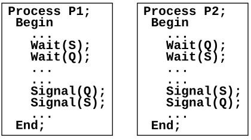
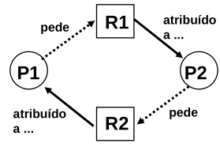

Deadlock versus starvation:
Deadlock (bloqueio fatal) :
- esperar indefinidamente por alguma coisa que não pode acontecer.
Starvation (inanição) :
- esperar muito tempo por alguma coisa que pode nunca acontecer.
Vários processos, executando concorrentemente, competem pelos mesmos recursos e quando um processo detém um recurso, os outros têm de esperar.
|
2 processos utilizando |
 |
|
 |
| Exclusão mútua | Solução: usar só recursos partilháveis ...! | Problema: certos recursos têm de ser usados com exclusão mútua. |
| Retém e espera |
Solução: Garantir que quando um processo requisita um recurso não detém nenhum outro recurso:
|
Problemas:
|
| Não preempção de recursos |
Solução: Permitir a preempção de recursos - Quando é negado um recurso a um processo, este deverá libertar todos os outros, ou o processo que detém esse recurso deverá libertá-lo. |
Problema: só é aplicável a recursos cujo estado actual pode ser guardado e restaurado facilmente (ex.: memória e registos da CPU) |
| Espera circular |
Solução: Protocolo para impedir espera circular; os vários tipos de recursos são ordenados e e os processos devem requisitá-los por essa ordem. |
Problemas:
|
Permitir que aquelas condições se verifiquem, e decidir, perante cada pedido de recursos, se ele pode conduzir a um deadlock, caso os recursos sejam atribuídos. Se sim, negar a atribuição dos recursos pedidos.
Examinar dinamicamente o estado de alocação de recursos para assegurar que não vai ocorrer uma espera circular.
Assegurar que o sistema nunca entra num estado inseguro (estado que pode conduzir a deadlock).
Duas estratégias:
Não começar a executar um processo se as suas necessidades, juntamente c/ as necessidades dos que já estão a correr, forem suscetíveis de conduzir a um deadlock. Demasiado Restritiva
Não conceder um recurso adicional a um processo se essa concessão for suscetível de conduzir a um deadlock. Algoritmo do Banqueiro
Algoritmo do Banqueiro
- Vantagens: Menos restritivo do que a prevenção ; Não requer a requisição simultânea de todos os recursos necessários ; Não obriga à preempção dos recursos.
- Dificuldades: Necessidade de conhecimento antecipado de todos os recursos necessários (utilidade prática limitada) ; Overhead necessário para detetar os estados seguros.
Os recursos são concedidos se estiverem disponíveis. | Periodicamente deteta-se a ocorrência de deadlocks | Se existir deadlock, aplica-se uma estratégia de recuperação.
Deteção:
Recuperação:
Mais detalhes no ppt - Solução do SO é a seguinte:
Considera-se que é preferível que ocorra um deadlock, de vez em quando, do que estar sujeito ao overhead necessário para os evitar/detetar. O UNIX limita-se a negar os pedidos se não tiver os recursos disponíveis.
Os deadlocks ocorrem essencialmente nos processos do utilizador, não nos processos do sistema. Alguns sistemas (ex: VMS) iniciam um temporizador sempre que um processo bloqueia à espera de um recurso. Se o pedido continuar bloqueado ao fim de um certo tempo, é então executado um algoritmo de deteção de deadlocks.